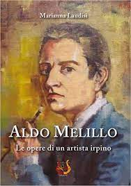

In this work, I showcase the works of an Irpino artist; an artist known in Campania(South of Italy) but less so throughout the rest of Italy. The overall goal was to bring his name beyond regional borders. The artist is Aldo Melillo, and from a very young age, he had a artistic talent that later introduced him to the world of teaching. The artist studied at the Institute and at the Academy of Fine Arts in Naples, and later became a professor in the State Schools in the cities of Avellino, Paternopoli (AV), and in his home town, where he also held the role of vice-principal until his retirement in 1993-94. Since 1960, he has set up numerous exhibitions and participated in many shows and contests.
